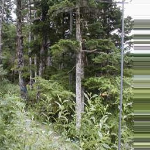
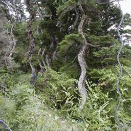
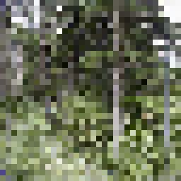
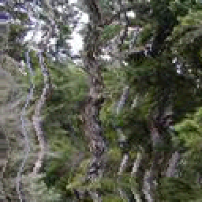

第 03 回
テクスチャ座標をずらして画像を揺らす
この回の目標
- 「どこの色を読むか(テクスチャ座標)」をずらすと、画像がゆがんで見えることが分かる。
- 陽炎・水中・画面の乱れのような 2D のエフェクトを作れる。
使うサンプル

samples/C5_SetPSConstFTest を書き換えます
テンプレート: templates/02_constant_buffer.dxtemplate(02 と同じ)
02 で時間を渡せるようにしたものから始めるとよい。
しくみ
01 では、読んだ色を書き換えました。今回は読む場所を書き換えます。
HLSL(シェーダー)float2 uv = PSInput.TextureCoord0 ; // ふつうはこの画素に対応する場所
uv.x += 0.01f ; // 少し右の色を読む → 画像全体が少し左にずれて見える
color = DiffuseMapTexture.Sample( DiffuseMapSampler, uv ) ;
- ずらす量を場所によって変えると、画像がゆがみます。
- 例えば
sin( uv.y * 40.0f )だけずらすと、上下の位置ごとに左右へ波打ちます。ここに時間を足すと、波が動きます。 - テクスチャ座標は画像の幅を 1 とした数なので、0.01 は画像の幅の 1%(256 画素の画像なら約 2.5 画素)です。
 元の画像
元の画像→

uv.x += 0.1f(全体を同じだけ)
uv.x += sin( uv.y * 40.0f ) * 0.01fsin( uv.y * 40.0f ) * 0.01f の値。画像の上から下までに、約 6 回、右と左に 0.01 ずつずれます。形(頂点)は動かしていないので、画像の外側の四角はそのままです。形を動かしたいときは 04〜06 の頂点シェーダーを使います。
課題
- ★3-1陽炎のように揺らす。
uv.x += sin( uv.y * 40.0f + 時間 * 5.0f ) * 0.01f。数を変えて、波の細かさ・速さ・大きさがどう変わるか試す。 - ★★3-2水の中のように、縦にも横にも揺らす(
uv.yもずらす。x と y で波の向きや速さを変える)。 - ★★3-3モザイクにする。
floor( uv * 32.0f ) / 32.0fで、テクスチャ座標をとびとびにする。 - ★★★3-4画像の端で、はみ出した所を読むとどうなるか確かめる。はみ出した所の読み方は、C++ の
SetTextureAddressModeUVで変えられる(既定は端の色を伸ばす「クランプ」。仕様書 10.1)。
完成イメージを見る
3-1 陽炎
3-2 水の中
3-3 モザイク解答例: 3-1 → answers/03_heat_haze(【課題 3-1】 の所)
解答例を動かした画面

answers/03_heat_haze